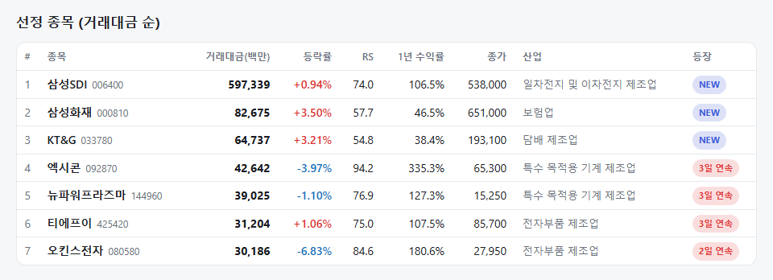
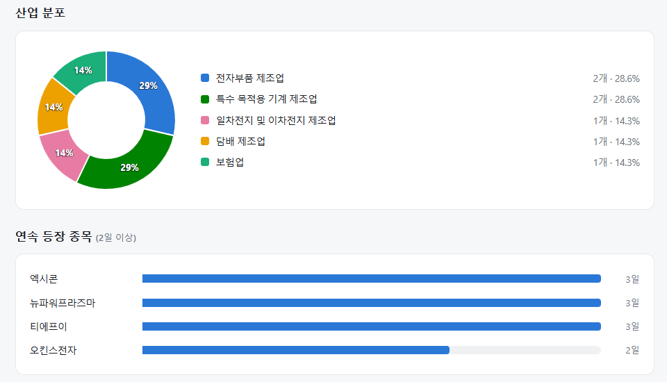
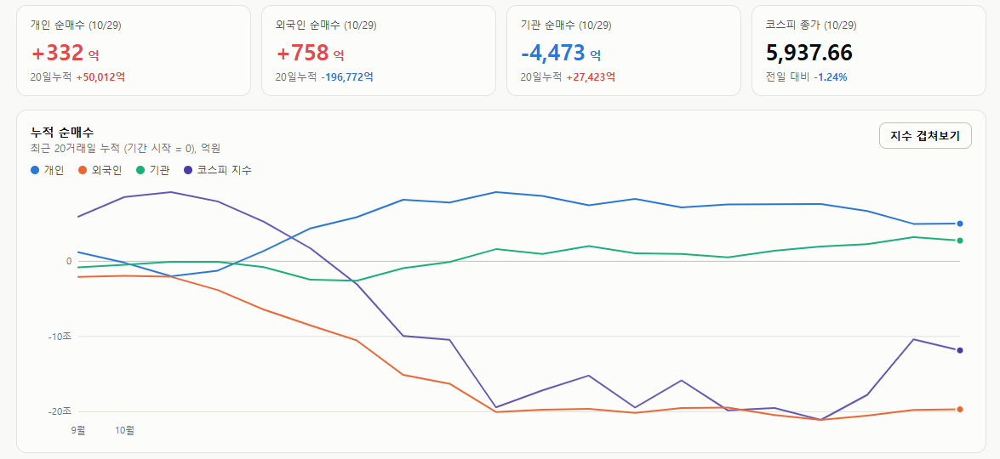

매일의 주도주 정리를 위해 기록합니다.
연속적으로 나온 종목들 또는 상승 후 조정받는 종목 위주로 리서치 해보시면 좋을 것 같습니다.


*오늘의 퀀트픽은 없습니다.
#주도섹터
금융(증권·은행·손해보험)
주요 업종 및 종목: 통신장비(+3.19%), 증권(+2.92%), 담배(+2.66%), 은행(+2.01%), 손해보험(+1.76%), 하나금융지주(+3.82%), 메리츠금융지주, KT&G(+3.21%), 삼성화재(+3.50%), KB금융(+1.82%).
분석: 시장 하락 속에서 증권(+2.92%), 은행(+2.01%), 손해보험(+1.76%) 등 딥밸류 금융주가 강세를 보이며 상승 업종 상단을 장악했습니다.
#조정섹터
에너지장비, 기계 및 2차전지
주요 업종 및 종목: 에너지장비및서비스(-6.81%), 기계(-5.47%), 소프트웨어(-5.41%), 전기제품(-5.30%), LG에너지솔루션(-8.60%), 두산에너빌리티(-7.65%), HD현대중공업(-5.08%), 삼성전자(-4.13%).
분석: 에너지장비(-6.81%), 기계(-5.47%), 조선(-4.39%) 등 산업재 및 인프라 섹터가 일제히 무너졌습니다. 특히 LG에너지솔루션(-8.60%)이 폭락하며 2차전지 전반의 투심을 냉각시켰습니다.
#수급동향

코스피 지수는 -1.24% 하락한 5,937.66으로 마감하며 6,000선 안착에 실패했습니다. 코스닥 지수 역시 -2.34% 하락한 753.23을 기록하며 전일의 상승분을 반납했습니다.
유가증권시장에서 전일 대규모 매수에 나섰던 기관 투자자가 하루 만에 4,473억 원을 순매도하며 지수 하락을 주도했습니다. 외국인 투자자는 756억 원을 순매수하는 데 그쳐 전일(8천억 원대) 대비 매수 강도가 급격히 축소되었고, 개인 투자자는 334억 원을 소폭 순매수하며 관망세를 보였습니다.
삼성전자 디스카운트의 두 근거가 해소되었다
삼성전자가 하이닉스보다 싸게 거래된 데는 삼성만의 이유가 두 가지 있었습니다. 첫째, HBM에서 뒤처졌다. 둘째, 파운드리가 적자다. 오늘 콘퍼런스콜은 이 둘에 각각 답했습니다.
① 첫 번째 근거 — “HBM 점유율이 DRAM 점유율을 따라잡았다”
2024년부터 2025년 내내 시장의 기본 서사는 "삼성은 HBM에서 뒤처졌다"였습니다. 하이닉스가 엔비디아 물량을 독식하는 동안 삼성은 인증에 묶여 있었고, 그 격차가 두 회사 밸류에이션 차이의 핵심이었습니다.
오늘 삼성은 3분기 HBM4 매출이 전분기 대비 3배 이상 늘었고 HBM 매출 비중이 60%라고 했습니다. 그리고 한 문장을 더 붙였습니다. "전체 DRAM 점유율 수준의 HBM 점유율 목표를 3분기에 달성했다." 범용 D램에서 가진 점유율만큼 HBM에서도 가져가게 됐다는 뜻이고, 이것은 격차가 줄었다는 말이 아니라 격차가 없다는 첫 공식 발언입니다.
뒤따르는 숫자도 하이닉스와 같은 자리입니다. 27년 물량은 목표 가격에서 협상 완료·완판, 고객의 증량 요청 지속, HBM4E는 27년 상반기 양산·하반기 램프업. D램 영업이익률은 79%로 하이닉스의 80%와 1%p 차이입니다.
② 두 번째 근거 — 적자 사업부가 병목 사업부로
파운드리는 몇 년째 삼성 전사 멀티플을 깎아 온 사업부입니다. 선단 공정 수율 문제, 대형 고객 이탈, 테일러 팹 지연이 겹치면서 "메모리로 번 돈을 파운드리가 태운다"는 평가가 굳어 있었습니다.
오늘 발언은 다릅니다. 8나노 이하 공정 전반이 큰 폭 초과수요로 가동률 100%를 넘었고, 2나노 수주 과제 수는 전년 대비 2배 이상, 27년에는 HPC 매출 비중이 50%를 넘습니다. 미국 주요 거래선의 AI·HPC 확판과 견조한 메모리 수요로 4나노 매출이 늘었고, 하반기 2나노 대형 거래선 신제품 양산으로 선단 가동률이 크게 개선됩니다. 테일러 팹은 클린룸 가동·설비 반입 중이고 추가 건설을 검토합니다. 회사 표현으로 "선단 증설 속도가 수요 증가를 따라가지 못하는 상황"입니다.
적자를 줄였다는 말이 아니라 공급이 모자란다는 말입니다. 여기에 4나노 HBM4 베이스 다이와 실리콘 캐패시터, 첨단 패키징을 메모리와 묶는다는 전략이 붙습니다. 파운드리가 메모리의 짐이 아니라 메모리의 부품이 되는 구조이고, 이것은 하이닉스에는 없는 삼성만의 재평가 요인입니다.
③ 두 회사 공통의 질문 — "투자를 늘리면 과잉이 오지 않나"
이것은 삼성 디스카운트가 아니라 메모리 업종 전체에 걸린 질문입니다. 올해 삼성 시설투자 84.4조 원, 하이닉스도 27년 투자를 상당폭 늘립니다. 메모리 투자자가 가장 오래 학습한 공식대로면 2028년이 정점이 옵니다.
오늘 콜에서 삼성의 답은 이렇습니다. 27년 캐펙스가 크게 늘어도 28년 비트 공급 확대 효과는 제한적이다. 건설비·장비가격 상승, 선수금, 긴 팹·장비 리드타임 때문에 같은 돈으로 살 수 있는 비트가 줄었고, HBM4E·HBM5로 갈수록 다이 크기와 메탈 레이어가 늘어 웨이퍼당 생산량이 줄어듭니다. 클린룸은 미리 확보하되 장비는 수요에 맞춰 탄력 집행. 그리고 그 뒤를 장기계약이 받칩니다. 대형 고객 10개사 체결, 10개사 추가 협상, 2030년 생산능력의 60~70%를 장기계약으로 묶는 것이 목표입니다. 하이닉스의 “27~28년 50% 이상”보다 기간이 길고 비중이 높습니다.
두 근거가 사라졌다고 삼성이 하이닉스와 같은 멀티플을 받아야 한다는 뜻은 아닙니다. 파운드리는 "가동률 100%"에서 "흑자"까지 아직 거리가 있고, 2나노 수율은 숫자로 나오지 않았습니다. 환율도 남아 있습니다. 3분기 환 영향 -10조 원에 대해 회사는 파생상품 전면 헤지 대신 매출·지출 통화 매칭의 내추럴 헤지로 대응한다고 했고, 원화 강세가 이어지면 이 비용은 계속 나옵니다. 그리고 3분기 D램 출하량은 +3%에 불과한데 가격은 +20%였습니다. 하이닉스와 마찬가지로 양이 아니라 가격이 만든 분기이고, 4분기 출하 가이던스(D램 +10% 중후반)가 다음 확인 지점입니다.
자사주 매입에 대한 언급이 없어서 아쉬운 컨퍼런스콜이었습니다. 다만 지금까지 삼성은 대형 자사주 매입을 컨콜에서 발표한 적이 거의 없고 실적 발표와 분리된 별도 이벤트로 처리해왔습니다. 주가가 실망으로 계속 빠진다면 결국 자사주 매입도 진행할 것으로 예상합니다.
오늘 하루도 수고하셨습니다.